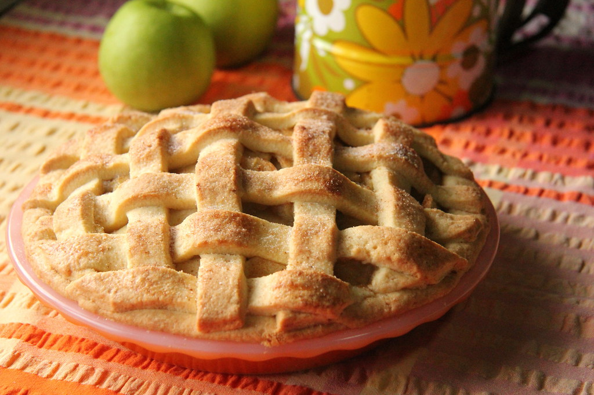

Apple Pie!

Description
Apple pie is great for any occasion! family gatherings, holidays or just a sweet treat at the end of the day!
Ingredients
- 1 (9-inch) unbaked pie crust
- 5 large Granny Smith apples, peeled, cored, and sliced
- 1 cup white sugar, divided
- 2 tablespoons plus 1/2 cup all-purpose flour, divided
- 1/2 teaspoon ground cinnamon
- 2 tablespoons lemon juice
- 1/2 cup cold butter, cubed
Steps
- Gather all ingredients. Preheat the oven to 425 degrees F (220 degrees C).
- Arrange pastry in the bottom of a 9-inch pie pan. Place apples in crust.
- Mix 1/2 cup sugar, 2 tablespoons flour, and cinnamon together in a bowl; pour over apples in crust. Sprinkle lemon juice on top.
- To make the crumble topping: Place 1/2 cup sugar and 1/2 cup flour in a bowl. Cut in cold butter with 2 knives or pastry blender until the mixture resembles coarse crumbs; sprinkle crumble mixture evenly over apples.
- Take two 15-inch pieces of parchment paper and enclose pie; fold edges up 3 times. Place on a baking sheet.
- Bake in the preheated oven, without opening the parchment, for 1 hour. Remove from oven, split parchment open, and cool pie on a wire rack.
- Serve warm, or at room temperature.